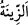
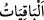
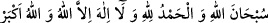
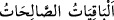

“ Servet ve oğullar dünya hayatının süsüdür.”
“__WORD__ ez-Ziynetü” aslında masdardır, ancak mübâlağa ifâde etmek üzere mef’ûl
anlamında kullanılmıştır. Yâni burada servet ve oğullar bizzat süsün kendisiymiş gibi
sunulmuştur. İnsanların ve özellikle Araplar’ın reislerinin övünüp durdukları mal ve
oğullar, onların dünya hayatında süslendikleri, çok geçmeden de yok olup gidecek bir
şeydir.
Mal ve evlad dünya hayatının ziynet ve süsüdür. Ne kabir ne de âhiret yolunun
azığıdır. Çünkü onlar az bir zamanda telefe mâruz kalır ve zevâle hedef olur.
Mesnevî’de der ki:
Dünya da böyledir işte... Bir hoşça açılır saçılır
Ama vefâsızlığını da bağıra bağıra söyler!
Oluş (kevn) der ki: İzim kutludur... ardımdan gel!
Bozuluş (fesâd) da git der, ben hiçbir şey değilim!
Ey baharların güzelliğine şaşırarak dudağını dişleyen,
Güzün sapsarı benzine ve mevsimin soğukluğuna bak!
Bir oğlan, güzellikle halkın efendisi olur...
Olur ama yarın da bunar, halka rezil rüsvay olur!
“Ölümsüz olan iyi işler ise” âhirette “Rabbinin nezdinde hem sevapça” sâhibine
geri dönen sevablar bakımından geçici ve fâsid mal ve oğullardan “daha hayırlı, hem
de” dünyadayken sâhibinin âhirette nâil olmayı umduğu iyi netice bakımından “ümit
bağlamaya daha lâyıktır.” Yukarıda geçen mal ve evlâda ise insanların âhirette nâil
olma ümidi yoktur.
“__WORD__ el-Bâkıyât”, hayırlı amellerin vasfı değil, ismidir. Bu sebeple de mevsuf, yâni
sevabı sonsuza kadar kalıcı olan “hayırlı ameller” burada zikredilmemiştir. Bunlar da
namaz, oruç, hac gibi amellerle “Sübhanallahi ve’l-hamdü lillahi ve lâ ilahe illallahu
vallahu ekber” ve benzeri güzel kelimelerdir.
Rivâyet edilir ki Nebî (a.s.) bir gün ashabının arasına çıktı ve: “Kalkanınızı alın.”
buyurdu. Ashab: “Gelen bir düşman mı var?” diye sordular. “Hayır, ateşten korunmak
için hazırlanın.” buyurdu. Onlar: “Bizi ateşten koruyacak kalkan nedir?” diye sordular.
Hz. Peygamber (a.s.):
“Sübhanallahi ve’l-hamdü lillahi ve lâ ilahe illallahu vallahu ekber, sözüdür.”
buyurdu.[183]
Kâşifî der ki: “Bâzı âlimler “__WORD__ el-Bâkıyâtü’s-sâlihât”ın kız
çocuklarıdır. “Onlar ateşe karşı perde olurlar” hükmünce onlar kurtuluş ve dindarlığın
sebebi oldular.”
Bir hadiste şöyle buyrulmuştur: “Kim kızlarla imtihan edilir ve onlara iyi